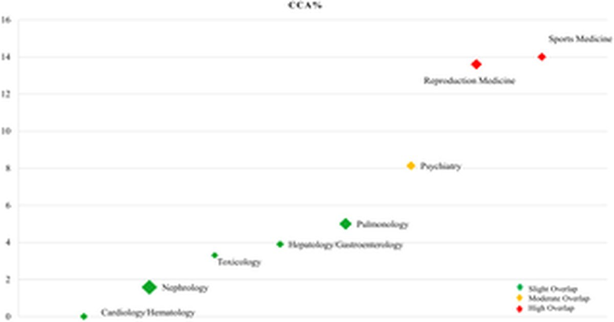

Перепрофилирование ландшафта N-ацетилцистеина: обзор обзоров в направлении клинического перевода
растущий интерес к перепрофилированию лекарств и окислительному стрессу привлек повышенное внимание к N-ацетилцистеину(NAC).
Несмотря на обилие обзоров в различных клинических областях, клинический перевод остается ограниченным.
Этот обзор направлен на то, чтобы отобразить имеющиеся фактические данные, выявить критические пробелы и наметить приоритеты для будущих исследований.
Методы Систематический поиск в пяти базах данных для выявления соответствующих обзоров